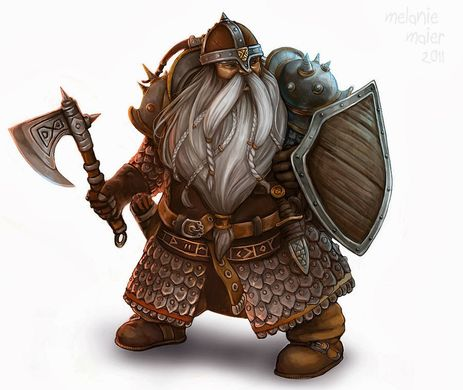
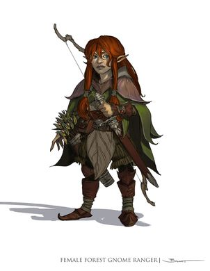
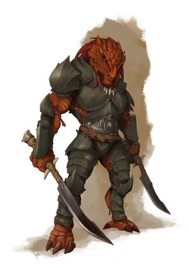
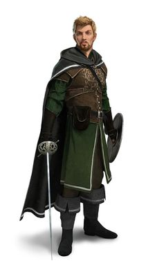
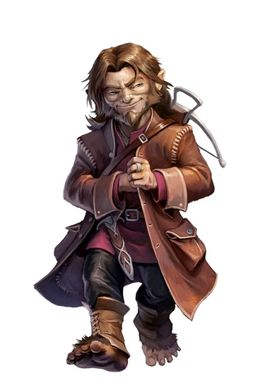
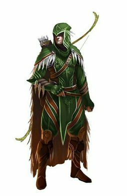

My D&D Adventure - Home
The Adventure Begins
1)Pick a Race
Dwarf - Age: can live up till 350 years
Alignment: tend to be good
size: 4-5 ft
speed: 25ft
With Each proficency point: +1 to tool crafting and +1 to HP

Half-orc - Age: can live up till 75 years
Alignment: Chaotic and never good
size: 7-8 ft
speed: 30ft
With Each proficency point: +1 to intimidate and +1 to HP

Half-elf - Age: can live up till 180 years
Alignment: Tend to be good or nuetral
size: 5-6 ft
speed: 30ft
With Each proficency point: +1 to Jump and +1 to HP

Gnome - Age: can live up till 500 years
Alignment: Tend to be good
size: 3-4 ft
speed: 25ft
With Each proficency point: +1 to Forgery and +1 to HP

Dragonborn - Age: can live up till 80 years
Alignment: Anything but nuetral
size: 6+ ft
speed: 30ft
With Each proficency point: +1 to intimidate and +1 to HP
Bonus: +1 to natural armor

Human - Age: can live up till 80 years
Alignment: anything
size: 5-6 ft
speed: 30ft
With Each proficency point: +1 to craft and +1 to HP

Halfling - Age: can live up till 250 years
Alignment: lawful good
size: 3ft
speed: 25ft
With Each proficency point: +1 to Tumble and +1 to HP

Elf - Age: can live up till 750 years
Alignment: Tend to be chaotic good
size: 5-6 ft
speed: 30ft
With Each proficency point: +1 to knowledge (Language) and +1 to HP

2)Pick a Class
Monk - Martial artist
HP: 8 + constitution mofifier
Base Attack Bonus: +3
Skills (pick 3 from):
Knowledge (religion) + 2
Jump + 2
Tumble + 2
Move Silently + 2
Fighter - Trained Warrier
HP: 1D10 + constitution mofifier
Base Attack Bonus: +3
Skills (pick 2 from):
Intimidate + 3
Knowledge (tactics) + 3
Tumble + 3
Move Silently + 3
Paladin - A fighter with a holy quest
HP: 1D10 + constitution mofifier
Base Attack Bonus: +3
Skills (pick 3 from):
Knowledge (religion) + 2
Climb + 2
Hide + 2
Intimidate + 2
Swim + 2
Ranger - Deadly Hunter
HP: 1D10 + constitution mofifier
Base Attack Bonus: +3
Skills (pick 2 from):
Handle Animal + 3
Ride + 3
Spot + 3
Knowledge (weapons) + 3
Rouge - Master Thief
HP: 1D8 + constitution mofifier
Base Attack Bonus: +1
Skills (pick 2 from):
Open Lock + 3
Escape Artist + 3
Search + 3
Sleight of hand + 3
Barbarian - Ruthless fighter
HP: 1D12 + constitution mofifier
Base Attack Bonus: +2
Skills (pick 2 from):
Handle Animal + 3
Intimidation + 3
Sence motive + 3
Knowledge (nature) + 3
Bard - loves playing music and is great with people
HP: 1D8 + constitution mofifier
Base Attack Bonus: +0
Skills (pick 3 from):
Listen + 2
Craft (instraments) + 2
Diplomacy + 2
Jump + 2
Knowledge (Music) + 2
Cleric - Healer
HP: 8 + constitution mofifier
Base Attack Bonus: +1
Skills (pick 2 from):
Heal + 4
Sence Motive + 3
Decipher script + 3
Knowledge (religion) + 3
3)Ability Modifiers
Roll 1: -5
Roll 2-3: -4
Roll 4-5: -3
Roll 6-7: -2
Roll 8-9: -1
Roll 10-11: 0
Roll 12-13: +1
Roll 14-15: +2
Roll 16-17: +3
Roll 18-19: +4
Roll 20: +5
Race Ability Modifiers
Strength:
Dwarf: + 2
Half-orc: + 2
Dragonborn: + 2
Human: + 1
Dexterity:
Elf: + 2
Gnome: + 1
Halfling: + 2
Human: + 1
Constitution:
Dwarf: + 2
Half-orc: + 1
Halfling: + 1
Human: + 1
Gnome: + 1
Intelligence:
Gnome: + 2
Half-Elf: + 1
Human: + 1
Wisdom:
Dwarf: + 1
Elf: + 1
Human: + 1
Charisma:
Halfling: + 2
Half-elf: + 2
Dragonborn: + 1
Human: + 1